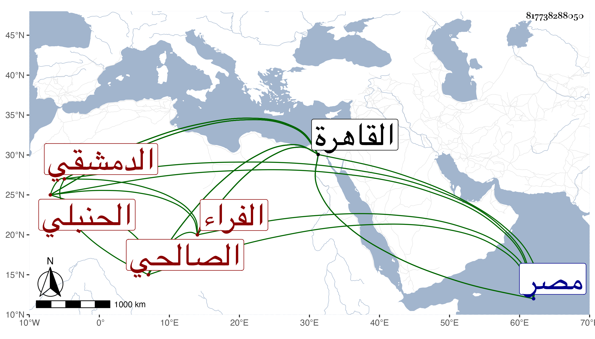

0902Sakhawi.DawLamic.ITO20230111-ara1.EIS1600.817738288050
Biography ID: 817738288050
إبراهيم الدمشقي الصالحي الحنبلي الفراء نزيل المدرسة الصالحية من القاهرة ويعرف بابن الأبله رجل صالح منور سليم الفطرة صحب ابن زكنون وأبا شعر وابن داود وغيرهم من سادات الحنابلة وعادت عليه بركتهم وحفظ عنهم آدابا وفضائل وقدم القاهرة فقطن صالحيتها ولم يعدم من يحسن له لسذاجته عمل الكيمياء بزعمهم فكان ينفد ما يحصله من كد يمينه وغيره في ذلك بحيث يصير مملقا وربما ليم في ذلك وهو لا ينكف وكذا كان يعتقد تملك ابن عثمان ملك الروم الديار المصرية ويترجى التوصل لحقه الذي كان سببا لمجيئه القاهرة ولم يحصل منه على طائل ولا يعدم من يمشي معه على سبيل المماجنة في حقية ذلك وبالجملة فكان في الخير بمكان وعلى ذهنه فوائد . مات في رمضان سنة ست وثمانين بالبيمارستان المنصوري ودفن بجوار الشمس الأمشاطي وهو ممن كان يعتقده ويحسن إليه كثيرا مع انكاره عليه ما قدمته بحيث كان يقول له أود لو تيسر لي ما تنفقه في هذه المحنة من كدك لآكل منه أو نحو هذا وأظنه جاز السبعين ونعم الرجل كان رحمه الله وعفا عنه .
